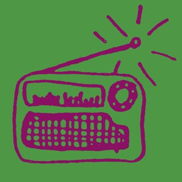

| | name // |
Benjamin Fisher, 96.5 FM, QLD.
| | creator // |
Benjamin Fisher
| | project // | COMMUNITY RADIO
| |
My program, 'Ozsound', is intended to give the band Elementary Penguin exposure.
Broadcast in the form of a radio program, the aim is to inform listeners and young and upcoming artists about the dedication involved in becoming a mainstream Christian artist today. The program will include a number of the band's latest and earliest recordings, and interviews with the band covering topics of specific interest to the audience, such as encouragement to young artists, musical inspiration, lyric writing, and etc.
You can check out Elementary Penguin's website to find out about them now, then listen to my show!
Benjamin's radio program is being broadcast on community radio as part of noise and Amrap's community radio project. You can catch Benjamin's programs on 96.5 FM Brisbane, as well as on the community radio satellite network.
noise has joined forces with Amrap - the Australian music radio airplay project, (a Commonwealth Government initiative that promotes and supports the significant role that community radio stations around the country play in supporting, developing, recording and broadcasting Australian music) to fund the production of a whole swag of new music programs and recordings. All the shows have been made by young community radio producers, 25 and under, about young Australian musos - who are also all 25 and under.
The range of music styles covered in the programs reflect the incredible diversity that exists on community radio throughout the country - from punk to country, classical to post-rock - with heaps in between.
The shows are being broadcast on community radio stations across the country by the producing stations as well as on the community radio satellite network - tune in for live band recordings, interviews with young artists and great new music.
| | date completed // |
04/Oct/2001
| | the file // |

| | file size // |
23550 bytes
|
|
|